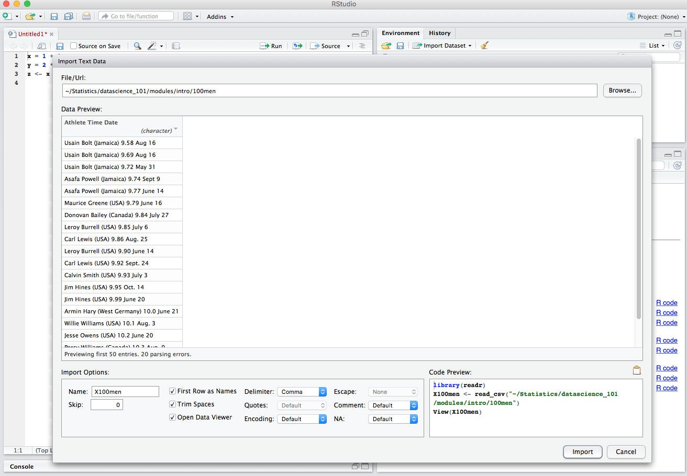

Import data
To do any real work, one has to load data from an external source. RStudio makes it easy to import data.
Consider the data set that will be used in Lab 2, which is the 100m times for men and women. We will illustrate importing this data set, step by step.
Step 1
From the Import Dataset menu, select From CSV to get a dialog as shown below and navigate to the folder containing the 100men file.

Note that the import dialog has a number of options and on the right buttom it shows a preview of the code that will be used to import the data. If one cut and pasted the code into the R console, the result would be the same as what one would get via the dialogs.
RStudio also take care to name the variable that will hold data according R conventions using X100men!
Step 2
When you open the file, RStudio shows a preview of the data in the viewer window.

This is of course not what we want since a cursory inspection shows that the data appears to contain three columns. So obviously, we have specified something wrong.
Step 3
In the Import Options panel, change the delimeter to Tab and while we are at it, change the name to data.men. Notice how the code preview reflects changes made to these options.

Step 4
Press the Import button to get the data into R.
The result of the import is a variable called data.men that contains the data. Data formatted this way (either tab-delimeted, or comma-separated, or spread-sheet like) is so common that R has a abstraction for it: the data frame. You will have more opportunity to learn about data frames in the data parts of the course.
Avoiding dialogs
As one becomes more and more familiar with R, direct code becomes preferable to the slower interactive dialogs. This is one reason that RStudio gives you the code preview, to aid in your learning process. So, to get the same effect as the above dialog process did, one could have pasted the RStudio code into an R console to get the same result.
library(readr)
data.men <- read_delim("100men", "\t", escape_double = FALSE, trim_ws = TRUE)## Parsed with column specification:
## cols(
## Athlete = col_character(),
## Time = col_double(),
## Date = col_character()
## )That would create the same data set.
With more complex structures like data frames, the function str (for structure) is a good way to examine them.
str(data.men)## Classes 'tbl_df', 'tbl' and 'data.frame': 20 obs. of 3 variables:
## $ Athlete: chr "Usain Bolt (Jamaica)" "Usain Bolt (Jamaica)" "Usain Bolt (Jamaica)" "Asafa Powell (Jamaica)" ...
## $ Time : num 9.58 9.69 9.72 9.74 9.77 9.79 9.84 9.85 9.86 9.9 ...
## $ Date : chr "Aug 16, 2009" "Aug 16, 2008" "May 31, 2008" "Sept 9, 2007" ...
## - attr(*, "spec")=List of 2
## ..$ cols :List of 3
## .. ..$ Athlete: list()
## .. .. ..- attr(*, "class")= chr "collector_character" "collector"
## .. ..$ Time : list()
## .. .. ..- attr(*, "class")= chr "collector_double" "collector"
## .. ..$ Date : list()
## .. .. ..- attr(*, "class")= chr "collector_character" "collector"
## ..$ default: list()
## .. ..- attr(*, "class")= chr "collector_guess" "collector"
## ..- attr(*, "class")= chr "col_spec"We see that the data consists of 20 observations on 3 variables: Athlete, Time, Date. The second is numeric while the others are character.
More on data import
RStudio provides ways to import data directly from spreadsheets like Excel, etc. You can explore these options on your own.
RStudio makes use of some packages to import data, notably the readr package. Strictly speaking these packages are not necessary for the job, but such packages include improvements that make them attractive. For example, a vanilla installation of R provides functions like read.csv and read.delim (analogous to read_csv, read_delim) that can also be used. However, by default, these functions perform some conversions, treating character variables as factors, for example. That can be troublesome (and computationally expensive) when dealing with large data sets. In this class, some instructors may use these vanilla R functions with various options to control the behavior.